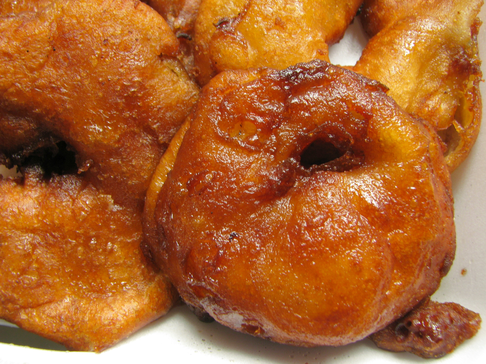

Fried Apples

Description
These fried apples feature Golden Delicious apples, simmered in a buttery, sweet sauce until tender, and then thickened with a cornstarch slurry.
Ingredients
- 6 teaspoons butter
- 4 Golden delicious apples, sliced, more as needed
- 2 teaspoons ground cinamon
- 1⁄2 cup white sugar
- 1⁄2 cup cold water
- 1 1⁄2 tablespoons cornstarch
Steps
- Melt butter in a deep skillet over medium-high heat.
- Add apples, cinamon and sugar and stir until well coated in sugar mixture. Bring mixture to a simmer. Reduce heat to medium-low and cook, coverd until apples are very tender, about 20 minutes.
- Whisk together cold water and cornstarch until dissolved. Stir cornstarch mixture into apple mixture and return to a simmer. Cook until thickened, about 2 minutes; remove from heat.
Home